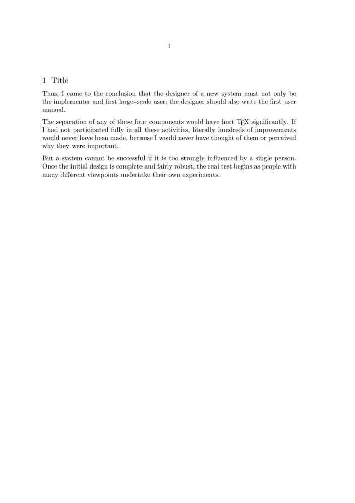

Contents
Summary
The command \definemeasure provides a clean way for defining dimensions.
Settings
Description
\definemeasure replaces low level \newdimen and partly \dimexpr.
The value can be retrieved with \measure as a string to be used in key value assignments, or with \measured as a true dimension to be used in calculations.
While \definemeasure allows some calculations, it still inherits some limitations of \dimexpr. Therefore it can be a bit hard to get the results you longed for. E.g. \textwidth * 0.5 doesn’t work, but 0.5\textwidth does.
Examples
Use \measure to retrieve values
-
\definemeasure[pointoneline][.5\baselineskip] \setupwhitespace[\measure{pointoneline}] \setuphead[subsection][after={\blank[\measure{pointoneline}]}] \starttext \startsubsection [title=Title] \input knuth \stopsubsection \stoptext
- 
Use \dimexpr if necessary
If you need calculations in assignments that are more than a simple multiplication, like .5\textwidth, you must use \dimexpr ... \relax!
\definemeasure[Bleed][3mm] \defineexternalfigure[fullwidthfigure][ width=\dimexpr\paperwidth + 2\measured{Bleed}\relax, ]
You can usually avoid that by defining another few dimensions:
Use \measured (d!) for calculations
\definemeasure[HalfWidth][.5\paperwidth] \definemeasure[MarginWidth][.5\measured{HalfWidth}] \definemeasure[Bleed][3mm] \definemeasure[MaxWidth][\paperwidth + 2\measured{Bleed}] \setuplayout[ width=\measure{HalfWidth}, rightmarginwidth=\measure{MarginWidth}, ... ] \defineexternalfigure[fullwidthfigure][ width=\measure{MaxWidth}, ] ...